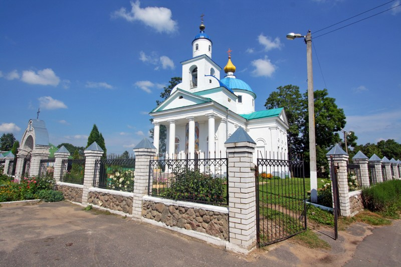
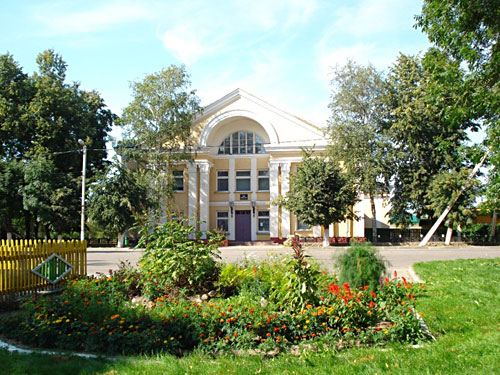
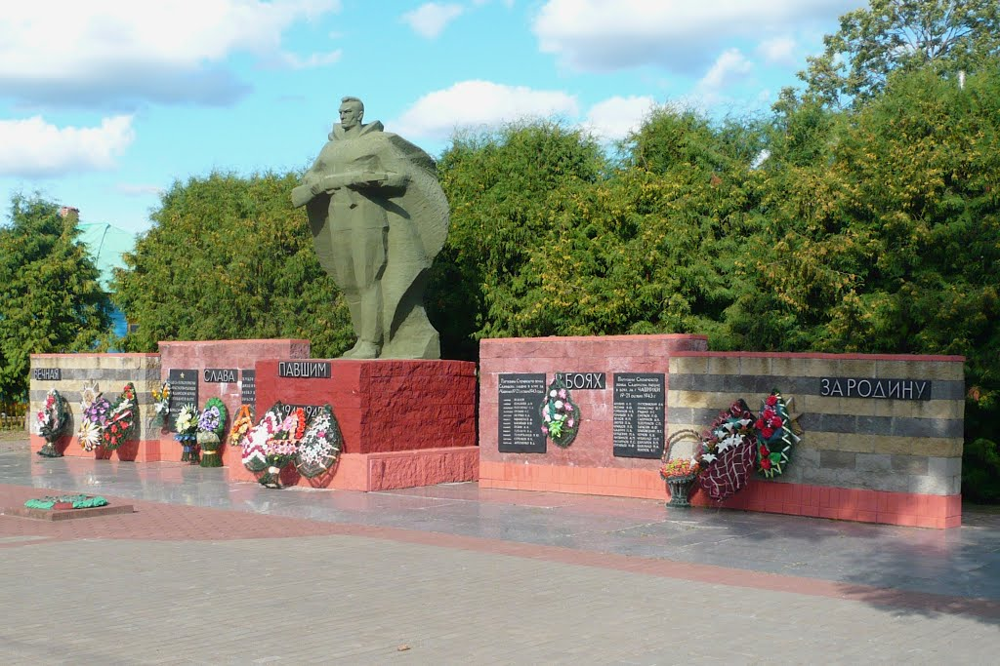

Ча́шники — город в Витебской области Белоруссии на реке Улла, 95 км от Витебска, 190 км от Минска. Административный центр Чашникского района. Автомобильными дорогами связан с Бешенковичами, Сенно, Оршей, Лепелем, < Новолукомлем. В 2 км от города — одноимённая железнодорожная станция на линии Орша-Лепель.